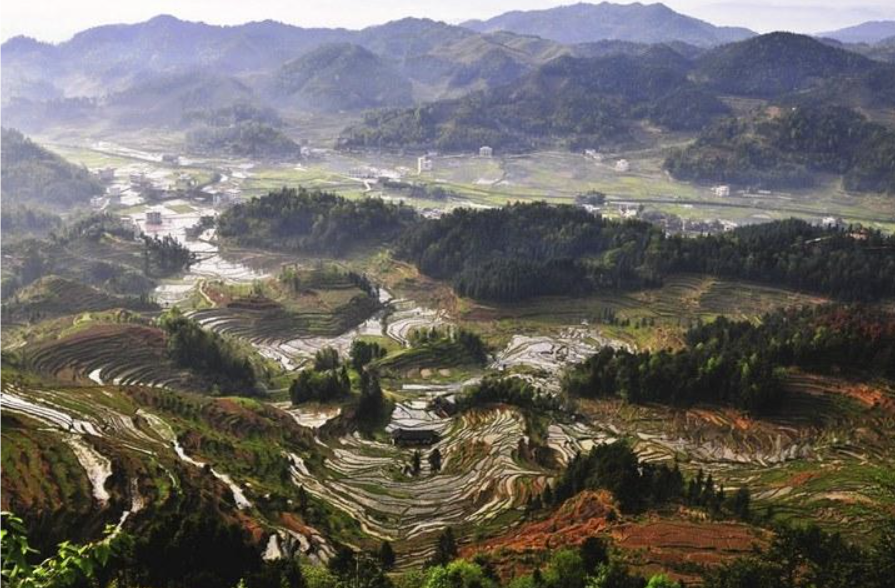

碳中和之我们的家乡
(鼠标移动到你的家乡，就可以看到家乡的碳中和发展状况哦)
钢铁行业作为能源消耗高密集型行业，是制造业31个门类中碳排放量很大的行业.
如何实现有效的节能减排？安徽钢铁行业在积极改革试点。
2月21日，六安钢铁控股集团与冶金工业规划研究院正式签署“碳达峰”及降碳行动计划战略合作协议，
为如期实现“碳达峰”和“碳中和”目标按下减碳“快进键”。
1月20日，国家电投集团陕西新能源公司（以下简称“国家电投陕西分公司”）与全球领先的光伏系统解决方案供应商隆基清洁能源正式签署战略合作协议。
双方将围绕“碳达峰”和“碳中和”目标，在清洁能源领域建立全面深入的伙伴关系，开展多元合作。
国家电投陕西分公司党委书记、总经理王超，党委委员、副总经理曹吉双、隆基股份总裁李振国、隆基清洁能源董事长张长江等一行出席了本次签约仪式。
黑龙江省作为全国重要的能源工业基地之一，原煤一直在能源消耗中占据主导地位，
但由此导致生态环境的变化，也日益成为人们关注和亟待解决的问题。
今年中央经济工作会议提出，我国二氧化碳排放力争2030年前达到峰值，力争2060年前实现碳中和的目标。
黑龙江省如何谋篇布局，做好碳达峰、碳中和工作?----
通过碳排放权交易，企业在获得利润的同时，利用自身低碳环保技术，有效降低碳排放，为实现碳达峰、碳中和这一目标作出贡献。
不仅仅是生物质热电联产项目，光伏发电作为清洁能源发电的代表也在黑龙江省逐渐发力。
图源黑龙江齐齐哈尔的绿色牧场，一篇绿色生机，可见碳中和的美好愿景。
近期，广西投资集团有限公司所属企业广投能源集团积极落实国家“碳达峰、碳中和”重大决策部署，
成功发行2021年第一期专项用于防城港核电二期项目建设的“碳中和”绿色公司债券，
本期债券发行规模5亿元，期限3+2年，票面利率5.3%。这是广西首单“碳中和”绿色债券。《
“碳中和”绿色债券作为绿色债券的一个子品种，其募集资金用途更聚焦，
须专项用于低碳减排领域，并对“碳中和”债券给予专项标识；
项目遴选更精准，鼓励发行人聘请独立第三方专业机构出具相关评估认证报告
；信息披露更透明，发行人需在年报和半年报中披露募集资金使用情况、绿色低碳项目进展以及碳减排等环境效益情况，
强化存续期信息披露管理，提高资金使用透明度。
2020年12月11日，全球首家以“碳中和”命名的研究机构——长三角碳中和战略发展研究院，在南京成立。
碳研院由南京市政府联合东南大学等有关方面共同组建，将聚焦碳中和领域的政策、技术、产品等开展研究，
促进碳中和技术成果转化和推广应用，为地方政府提供碳达峰、碳中和的政策咨询，为企业提供绿色转型的解决方案。
同时，为积极响应国家“十四五”规划中碳达峰、碳中和远景目标和要求，在推动高质量发展中促进经济社会发展全面绿色低碳转型，
近期，江北新区出台《南京江北新区碳达峰、碳中和行动计划》（试行），将低碳发展作为推进江北新区现代化、国际化、生态化建设的重要抓手。
近年来，首都的生态文明明显提升。
绿色发展理念深入人心，绿色生产生活方式普遍推广，垃圾分类成为全市人民自觉行动。
能源资源利用效率大幅提高，单位地区生产总值能耗、水耗持续下降，生产生活用水总量控制在30亿立方米以内。
碳排放稳中有降，碳中和迈出坚实步伐，为应对气候变化做出北京示范。
主要污染物排放总量持续削减，基本消除重污染天气，消除劣Ⅴ类水体，森林覆盖率达到45%，平原地区森林覆盖率达到32%，绿色北京建设取得重大进展。
《上海市国民经济和社会发展第十四个五年规划和二〇三五年远景目标纲要（草案）》（以下简称“规划纲要草案”）提出，
上海将制定全市碳排放达峰行动计划，着力推动电力、钢铁、化工等重点领域和重点用能单位节能降碳，确保在2025年前实现碳排放达峰。
根据规划纲要草案，上海将继续实施重点企业煤炭消费总量控制制度，
到2025年，煤炭消费总量控制在4300万吨左右，煤炭消费总量占一次能源消费比重下降到30%左右，
天然气占一次能源消费比重提高到15%左右，本地可再生能源占全社会用电量比重提高到8%左右。
上海还将推进全国碳排放交易系统建设，争取开展国家气候投融资试点。
2021年，上海将新建林地5万亩、绿地1000公顷。到2025年，上海市森林覆盖率将达到19.5%。
1月28日,中国首个可再生能源“碳中和”智慧园区认证仪式在新疆金风科技股份有限公司(下称“金风科技”)亦庄智慧园区内举行，
北京绿色交易所向金风科技亦庄智慧园区颁发了碳中和证书。
北京亦庄经济技术开发区经发局局长刘力、城市运行局局长段青松、
北京绿色交易所常务副总经理王辉军以及金风科技董事长武钢等参加颁发仪式。
有网友表示，西藏城投才是正宗的碳中和，未来建筑要发展石墨烯采暖的，节能，效率高，环保，应该会有政策导向的，传统的采暖势必要被淘汰。
阿拉丁（ALD）数据显示，目前青海省电解铝建成产能283.5万吨，运行产能254万吨，占全国运行产能的6.4%。
阿拉丁（ALD）调研了解，青海省内几家电解铝都是电网的大用户，
鉴于青海省电力的清洁能源的高比例情况，省内几家电解铝厂已成为或正在申请绿色工厂，绿色铝品牌均呈崛起之势。
2021年，甘肃省将围绕落实2030年二氧化碳排放达峰目标与2060年碳中和愿景，统筹推进相关各项工作。
制定2030年前全省二氧化碳排放达峰行动方案，编制能源、工业、交通、建筑、农业等重点领域碳达峰专项行动方案。
有序推进碳达峰、碳中和工作，电力、钢铁、建材、有色、石化、化工等重点行业和企业将明确碳达峰目标并制定达峰行动计划。
在近期召开的宁夏回族自治区政协全会上，自治区政协委员、宁夏产权交易所董事长施晓军表示，
为推动率先实现碳中和，建议宁夏建立“2+1”碳中和模式，
建立具有约束作用的碳排放权交易和具有激励作用的绿氢交易两个市场，
组建“宁夏碳中和基金”，为黄河流域生态保护和高质量发展提供宁夏方案。
云南省级领导表示要立足省情实际，加强科学谋划，既要做“加法”，也要做“减法”，既要研究部署好未来产业发展增量，也要研究去产能腾出环境空间，
把碳达峰、碳中和纳入生态文明建设整体布局，编制碳达峰、碳中和行动方案，提出目标要求，制定实施措施，划定时间表和路线图，一步一步扎实推进。
一直以来，广东非常重视低碳工作。从2010年启动国家低碳省试点工作起，历经十载，
广东超额完成超44%的碳排放下降目标。长期以来，广东省通过行政主导、问责推动取得一定成效，
但节能减碳形势仍然严峻。
因此，引入市场机制，探索基于总量控制的碳排放权交易成为了高效率、低成本完成节能减碳约束性指标的现实选择。
长春已经宣布，出租车和公务车原则上不再增加或更新燃油车
，力争用3年时间投放3.4万辆新能源出租车、网约车、公务用车，实现“电池银行”流转电池4.1万块规模。
在碳中和引发的新一轮能源革命背景下，中国老工业基地吉林积极寻求抢占先机。
除了汽车产业不断向新能源过渡，其能源结构也在悄然发生着变化。今年一季度，吉林新能源发电量创历史新高。
8月1日，由联合国人居署、中国城市和小城镇改革发展中心共同主办的第二届国际城市可持续发展高层论坛在成都市开幕。
本届论坛的一大亮点是举行了我省首次碳中和项目启动仪式。
碳中和项目（即计算活动中二氧化碳的排放总量，然后通过植树等方式把这些排放量吸收掉)近年来已在高规格国际大会中逐渐采用。
成都将于10月在龙泉山城市森林公园建设500亩碳中和林，以完全抵消本次论坛碳排放。
重庆市应对气候变化领导小组办公室于1月22日在嘉澜四季酒店8楼多功能厅组织召开了落实碳达峰碳中和目标专家座谈会。
专家以碳达峰目标为主线，围绕三个方面提出了意见建议。一是对标“碳达峰碳中和”目标，结合成渝地区双城经济圈建设，
就产业结构转型升级、能源结构优化、绿色建筑、绿色交通、绿色金融、绿色消费等重点领域政策措施、重点项目和重大技术；
二是“十四五”基础能力保障、低碳试点示范、减污减碳协同等方面应对气候变化工作任务；
三是市碳排放权交易试点、气候投融资试点、“碳汇+”生态产品价值实现试点。
湖北省已启动相关专项研究。
据相关负责人介绍介绍，为切实完成应对气候变化中长期目标，国家要求各省在今年底完成省级碳达峰行动方案。
碳达峰行动是一个宏大课题，时间跨度长、涉及领域较多。
目前，湖北省生态环境厅已经成立工作专班，集中省内研究力量，凝聚智库智慧，
发挥支撑机构咨询作用，收集、整理相关数据、资料，开展前期研究，启动了碳达峰和碳中和相关专项研究工作，为湖北省碳达峰行动方案提供技术支撑。
湖南省林业局日前召开湖南省碳中和“十四五”林业行动要点座谈会。
会上，有关负责人表示，湖南省林业局在碳中和方面已开展了大量基础性工作，要开展调研摸底，
制定《湖南省碳中和林业碳汇十四五行动方案》，确保全省碳中和林业工作有序开展，为湖南从林业大省向林业强省转变作出应有的贡献。

山西省省长林武日前在山西省第十三届人民代表大会第四次会议开幕回上做的山西省2021年政府工作报告提出，
2021年将实施碳达峰、碳中和山西行动。
把开展碳达峰作为深化能源革命综合改革试点的牵引举措，研究制定行动方案。
推动煤矿绿色智能开采，推动煤炭分质分级梯级利用，抓好煤炭消费减量等量替代。
建立电力现货市场交易体系，完善战略性新兴产业电价机制。加快开发利用新能源。
开展能源互联网建设试点。探索用能权、碳排放交易市场建设。
十四五”期间，河北省落实碳达峰碳中和目标面临着新形势、新任务、新要求，
相关负责人表示会坚决贯彻落实习近平总书记关于“3060目标”的重要宣示精神，
充分认识碳达峰行动的重要性和紧迫性，围绕中央经济工作会议部署，
结合生态环境部工作安排，抓紧谋划制定我省二氧化碳排放达峰行动方案，
积极推动河北省碳达峰碳中和战略研究，持续打好污染防治攻坚战，努力实现减污降碳协同效应
，把降碳作为推动河北省经济结构、能源结构、产业结构低碳转型的总抓手，实实在在推动河北省绿色低碳发展。
为落实国家提出的“碳达峰、碳中和”目标要求，辽宁电力加快实施综合能源服务，
推动地区能源转型和绿色低碳发展，实现传统电网向能源互联网转型升级，力争2025年全省非化石能源总装机容量比例达50%以上。
在推动能源绿色转型方面，辽宁一直是领头羊（国网辽宁省电力有限公司人士表示）。
数据显示，2020年辽宁新能源综合利用率达99.22%，已连续三年保持国际领先水平。
2020年年底，全省清洁能源装机容量占比达36.96%。
天津在国内率先全面建成“生态宜居”“产城集约”两种典型智慧能源小镇。
3月16日，天津智慧能源小镇成果发布会召开，中新天津生态城惠风溪“生态宜居型”智慧能源小镇和天津北辰大张庄“产城集约型”智慧能源小镇全面建成，
并发布《天津智慧能源小镇》白皮书，输出“10+10”创新成果，对推进我国“碳达峰、碳中和”目标具有重大示范引领作用。
山东省委经济工作会议将改善生态环境质量，编制山东省省碳达峰碳中和行动方案列入2021年十项经济工作重点内容之一。
在气候恶化、疫情突袭背景下，反思人与自然、经济发展与环境生态的关系，构建绿色低碳的新经济发展模式已经成为国际共识。
中国能源研究会常务理事、国家应对气候变化战略研究和国际合作中心研究员李俊峰指出，“碳中和”意味着一个以化石能源为主支持发展的时代开始结束，
一个新的浪漫时代开始了，一个向非化石能源过渡的时代来临，全球追求一个共同的目标，一个共同的价值观——碳中和。
我国CO2排放力争于2030年前达到峰值，努力争取2060年前实现“碳中和”。
为达成“碳中和”的宏伟目标，河南省石油和化学工业协会携手心连心集团邀请行业内多位专家举行座谈会，
从化工的角度研讨CO2的综合利用技术。会上各位领导和专家从不同角度出发，阐述了在“十四五”期间应对“碳达峰”的思路。
作为能源企业，国网浙江电力在保障能源电力供应、引领清洁低碳发展方面有着绝对的信心和决心。
以浙江丽水为例，当地供电公司利用自身资源禀赋优势，通过机制创新，唤醒沉睡资源，激活绿色潜质，
配合政府打出了“错峰发电”“虚拟电厂”“负荷聚合商”三套创新组合拳，走出了一条助力“碳中和”，实现可持续发展，践行高质量绿色发展的创新发展之路。
实现碳达峰、碳中和是一场广泛而深刻的经济社会系统性变革，
厦门作为国家首批低碳城市试点之一，市委市政府将绿色低碳理念融入全市生态文明建设中，
在园区改造、交通、垃圾处理、能源、林业等领域综合利用先进低碳技术、方法和手段，以及增加森林碳汇等碳中和机制，
并在全省率先建成首个近零碳排放示范区——东坪山片区近零碳排放区示范工程，探索积累绿色低碳发展方式经验，为全省推广近零碳排放区示范工程提供“厦门样板”。
中国工程院院地合作重点研究项目“江西碳达峰与碳中和模式与实现路径研究”启动会在南昌顺利召开。
项目负责人中国工程院院士、生态环境部环境规划院院长王金南主持会议，我院党组成员、副院长章国勇，院首席科学家熊继海出席会议。
参会的领导与专家主要围绕江西省碳达峰和碳中和研究模型、实现路径及成果产出展开了热烈讨论，并为下一步研究提出了指导性意见和建议。
项目最终为江西省碳达峰碳中和战略决策、碳达峰碳中和政策和规划制定提供技术支撑。

相关负责人表示，香港去年的财政预算案在环保方面投入超过100亿港元，
当中包括了推动电动车普及化、淘汰欧盟四号柴油商业车辆、
电动渡轮试验计划、成立低碳绿色科研基金、延长清洁生产伙伴计划和废纸回收等，相关的措施正在逐步落实。
相关负责人认为，全国实现碳中和是澳门地区发展的重要基础。
要抓住这一机遇期和内地结合起来，打造粤港澳大湾区低碳发展的优势，促进澳门的经济转型和可持续发展。
他介绍了各国的碳中和目标，分析澳门地区如果不包括从内地购买电力的间接二氧化碳排放，只考虑本土能源消费和废弃物处置产生的排放，
很有希望在2035年左右实现碳中和，将成为世界范围内首批实现碳中和的经济实体，无疑会极大提升澳门地区的国际形象和影响力。
台灣中油公司與液化天然氣供應商殼牌公司首度針對進口液化天然氣試行碳中和合作案，
近日由Grand Aniva船載運，從俄羅斯庫頁島啟航，經過一周的航程，安抵高雄永安液化天然氣廠靠卸。
台灣中油表示，此次為台灣首次卸收碳中和液化天然氣貨氣，所取得的「溫室氣體減量額度」
經過國際第三方認證，相當於610座大安森林公園一年之吸碳量，為降低國內碳排放做出努力和具體貢獻。
有关负责人表示，为贯彻落实总书记重要讲话精神和党中央的决策部署，率先达到碳排放峰值，要从根本上解决二氧化碳排放问题。
内蒙古是煤炭大区，限制二氧化碳排放，煤化工企业的发展就会受到限制，
经济发展受到影响。二氧化碳施肥技术将工业企业排放的二氧化碳收集起来，运输到设施农业中进行利用，可以有效减少煤化工企业二氧化碳的排放

在海南澄迈召开的第二届人口老龄化长寿化国际研讨会，在省内首次采用捐资造林，
增加碳汇的形式，来抵消会议过程中产生的二氧化碳排放量，
以最终实现会议的“零”碳排放，成为海南首个“碳中和”国际性会议。此举受到各界嘉宾积极响应。
“十三五”时期，贵州生态建设大踏步前进。
县级以上城市空气质量优良天数比率保持在95%以上，森林覆盖率达60%，
主要河流出境断面水质优良率100%。2020年，贵州新能源装机突破1500万千瓦，清洁能源发电量789.3亿千瓦时，
增长20.3%，减少二氧化碳排放6154万吨。
贵州将坚定不移走生态优先、绿色低碳的高质量发展道路，全力打好实现“碳达峰、碳中和”这场硬仗